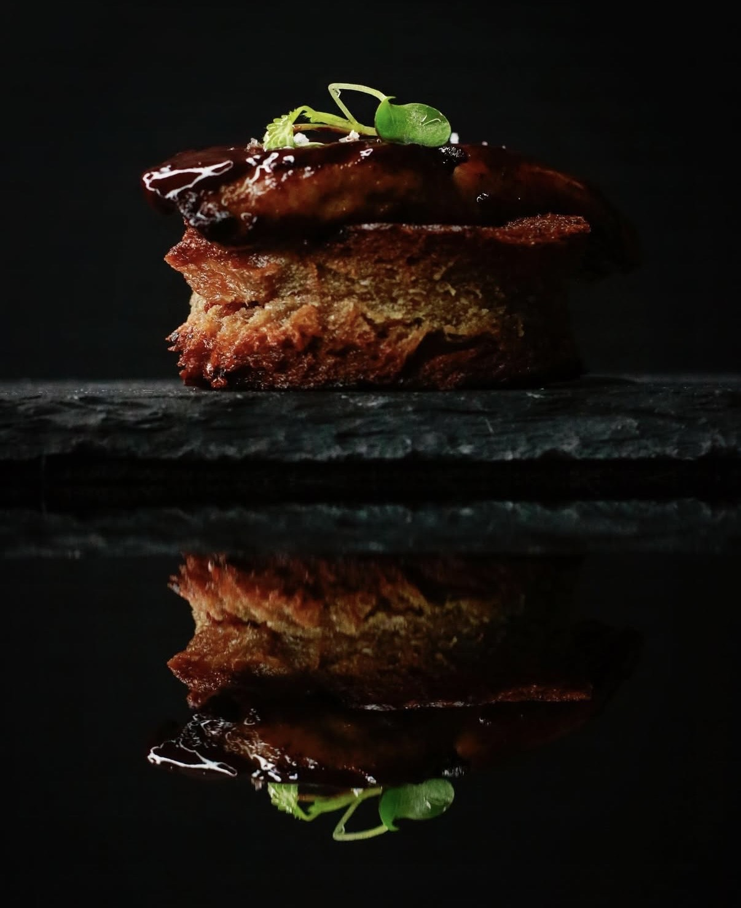

B. Moore's food photography has been published alongside countless celebrity chefs. He also partners with high-end restaurants on image consulting and social media management.
B. Moore is represented by Sleeper Talent. Food photography commissions are handled directly and fall outside that representation.